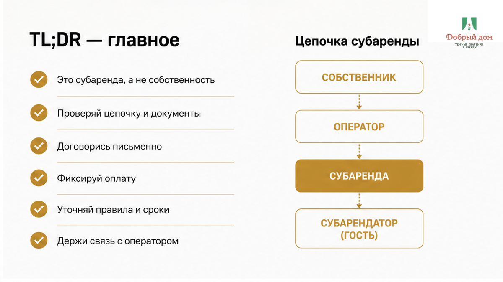
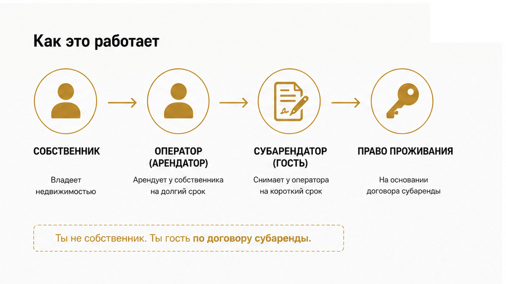
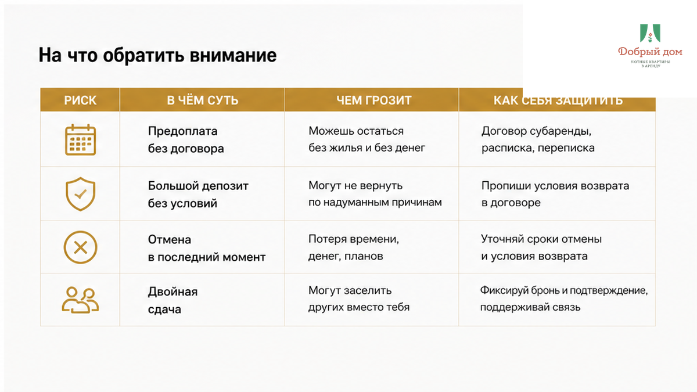
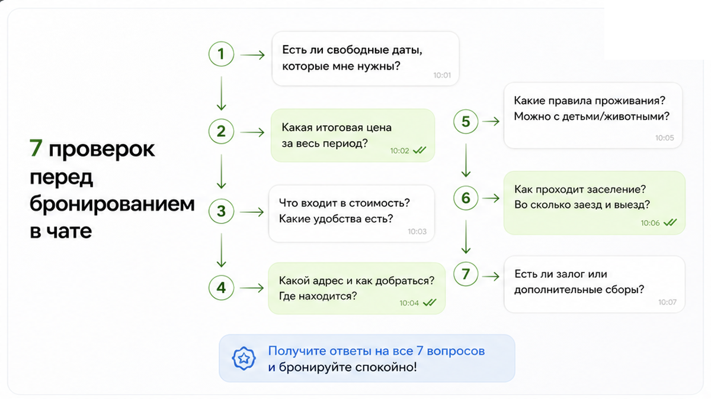
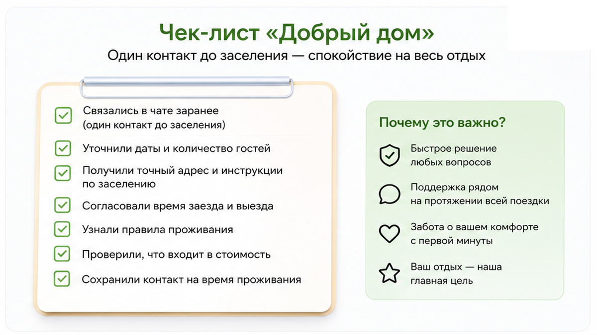
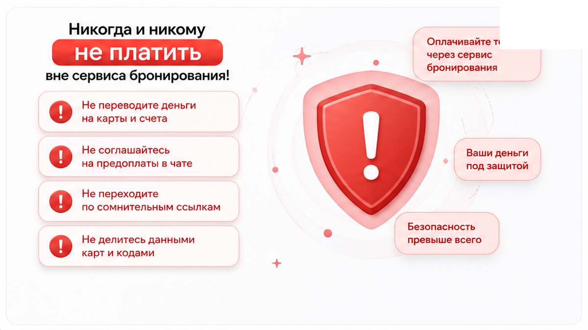
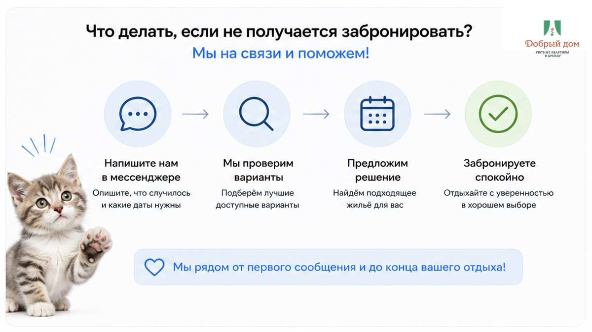

Вы уже у подъезда в Тюмени. Чемодан рядом, предоплата ушла, в телефоне сообщение: «Я не хозяин, я сам снимаю эту квартиру и сдаю по суткам».
Вот где может стать тревожно. Кому вы отдали деньги? Кто вернёт залог? И что будет, если настоящий собственник вдруг скажет: «Освобождайте квартиру»?
Субаренда сама по себе не страшна. Страшно платить человеку, у которого нет разрешения сдавать квартиру посуточно. Покажу, что спросить до перевода денег.

Быстрый инсайт. Субаренда — это не обязательно обман. Но до оплаты важно понять две вещи: кто берёт деньги и разрешил ли собственник посуточную сдачу.

Схема простая. Человек снимает квартиру у собственника на долгий срок, обустраивает её, закупает бельё и технику, организует уборку — и принимает гостей посуточно.
Собственник получает стабильную аренду. Оператор следит за квартирой и отвечает гостям. Гость получает понятное заселение, чистое бельё и человека, которому можно написать, если ночью не открылся замок.
Если собственник в курсе и согласен — в этом нет ничего необычного. В Тюмени так работают многие квартиры комфортного уровня. Когда у оператора несколько объектов, ему проще держать уборку, стирку, замену полотенец и связь с гостями.
Плохо, когда собственник не знает, что квартиру пересдают. Тогда бронь может оборваться прямо в середине поездки. Хозяин увидел чужие вещи, приехал — и квартира закрылась. А вы уже отдали деньги человеку, который за неё не отвечает.

Предоплата в никуда. Деньги уходят на карту, имя не совпадает с именем в объявлении, вместо чека присылают скриншот. Через день номер молчит.
Залог без понятных условий. Сам залог — обычная история, мы его тоже берём. Неприятно, когда никто не написал сумму, причину удержания и срок возврата. Об этом отдельно рассказывали в статье, почему залог «не возвращают» на выезде.
Срыв брони. Вы приехали, а замок уже другой или вам говорят, что квартиру больше не сдают. В сезон, когда квартиры в Тюмени забирают командировочные и вахта, искать замену вечером трудно и обычно дороже.
Двойная бронь. Одни и те же фото появляются на нескольких площадках у разных «менеджеров». Кто-то из них может просто пересдавать чужую бронь и не иметь отношения к квартире.

Ровно семь. Без сложных слов и долгих разговоров — прямо в чате, до кнопки «перевести».
Если на все семь вопросов отвечают без нервов — можно двигаться дальше. Если человек срезался на втором вопросе и начал торопить, это не строгость. Это риск.
Полный список вопросов, которые мы сами задаём и советуем задавать по чужим объектам, держим в канале — t.me/Dobriy_dom_72. Там же выкладываем свободные даты по Тюмени.

Мы — «Добрый дом». Сдаём квартиры посуточно в Тюмени. Часть объектов наша, часть работает по договору с собственниками. Если квартира в субаренде, посуточная сдача в договоре прописана. Мы этого не прячем: спросили — ответили, попросили подтверждение — прислали.
Для гостя это выглядит так:
Хотите проверить нас по своим же семи пунктам — напишите менеджеру: MAX или Telegram. Инструкцию по заселению мы присылаем до заезда, а не когда вы уже стоите у двери.

Нормальная бронь не боится простых вопросов. Вам не делают одолжение — вы выбираете место, где будете жить.

Если после оплаты пропал собеседник, сменился номер или адрес «внезапно другой» — не ждите заселения. Пишите в поддержку площадки и сохраняйте скрины. Если платили напрямую — сразу уточняйте, кто юридически принимает деньги и кто открывает дверь.
Мы на связи до заселения: менеджер в Telegram или MAX. Лучше задать семь вопросов заранее, чем искать ответ у закрытой двери.
Да, если собственник разрешил сдавать квартиру посуточно. Не нужно устраивать допрос: просто попросите подтвердить, что такое разрешение есть. Есть ответ и подтверждение — можно обсуждать бронь. Нет — лучше искать другой вариант.
Смотрите на детали. Собственник обычно хорошо знает дом и квартиру. Оператор знает, как устроены уборка, бельё, заезд и поддержка. А человек без прав на квартиру часто говорит общими фразами и быстро переводит разговор к оплате.
Не заезжайте молча. Спросите в переписке, есть ли разрешение собственника, кто отвечает за квартиру и кому вы уже заплатили. Если ответов нет, лучше не оставаться с вещами в квартире, которая может закрыться ночью.
Такое случается, если собственник не знал о посуточной сдаче. Поэтому вопрос про его согласие стоит задать в самом начале, а не после приезда.
Сам перевод не проблема. Важно, чтобы имя владельца карты совпадало с именем в договоре и переписке. В назначении платежа лучше указать адрес и даты. Если деньги просят отправить чужому человеку — попросите реквизиты того, с кем договаривались.
Попросите одним сообщением подтвердить адрес с номером квартиры, даты и время, цену за сутки, залог и срок его возврата, а также контакт на случай проблемы. Пять строк — и вместо смутного обещания у вас есть понятная договорённость.
Хотите не гадать, кто открывает дверь — забронируйте на сайте, каталог — на добрыйдом-72.рф, либо позвоните: +7 993 574-83-22. Мы ответим на семь вопросов ещё до оплаты — без давления и без «переведите другу хозяина».